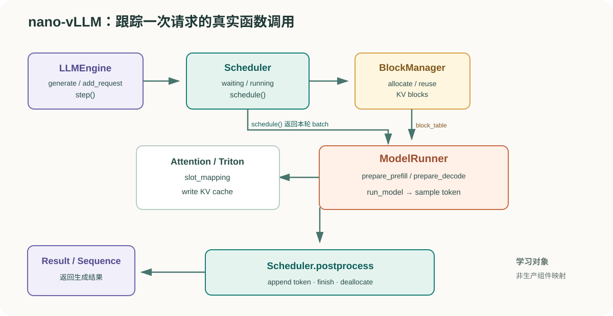

第 23 章 · 高级推理与源码实践
nano-vLLM Source Walkthrough：把每个 Token 跑过源码
以固定 nano-vLLM commit 为对象，一步步追踪 LLMEngine、Scheduler、BlockManager、ModelRunner 与 Triton Attention，同时明确它与生产 vLLM V1 的差异。
理解推理引擎最好的方式，是手动跟踪一个请求从文本到 token、从队列到 GPU、再从采样到终止的路径。nano-vLLM 将复杂生产系统压缩成较小的代码阅读对象；阅读目标是建立因果链，而不是声称它拥有 vLLM 的全部能力。
学习目标
- 定位 nano-vLLM 实际类及其关键方法。
- 解释 Scheduler 与 BlockManager 如何协作。
- 跟踪 Prefill、Decode、KV Cache 写入与 Sampler。
- 区分教学实现与生产级 vLLM 的功能及性能边界。

23.1 为什么读 nano-vLLM，而不是直接读全部 vLLM？
生产级 vLLM V1 包含大量模型、并行通信、缓存策略、量化、工具链与观测逻辑，初学者容易迷失在工程细节中。GeeeekExplorer/nano-vllm 是一个可单独运行的精简推理项目：源码规模小、目标是帮助理解最小推理闭环，而不是提供 vLLM 全部能力。
本章按固定 commit bb823b3e… 审核其真实类和方法。仓库 README 把代码量概括为约 1,200 行，这是项目自己的描述，不是跨版本保证；nano-vLLM 的测试模型、CUDA/Triton/FlashAttention 依赖和 benchmark 条件也不应被推广成普遍速度结论。
23.2 从 LLM.generate 到一次调度执行
入口位于 nanovllm/llm.py，其中 class LLM(LLMEngine) 将用户接口交给 nanovllm/engine/llm_engine.py。最重要的调用链是：
generate → add_request → step → Scheduler.schedule → ModelRunner.run → Scheduler.postprocessadd_request 将文本经 Tokenizer 转成 token IDs，封装成 Sequence；step 询问 Scheduler 本轮运行哪些序列及是否进入 Prefill，通知 GPU runner 运行并把产生的 token IDs 回传给调度器；调度器检查 EOS / max_tokens 和序列状态，最终把完成结果送回上层。
# 沿真实源码名字写出的控制流“阅读伪代码”，非原仓库完整实现
seq = Sequence(prompt_token_ids, sampling_params)
scheduler.add(seq)
while not scheduler.is_finished():
batch, is_prefill = scheduler.schedule()
tokens = model_runner.run(batch, is_prefill)
scheduler.postprocess(batch, tokens, is_prefill)注意 nano-vLLM 的 API、传输、模型支持和异常行为不是 vLLM 生产 AsyncLLM API 的替代品。
23.3 Scheduler：等候、运行、抢占和回收
固定源码中的 Scheduler 持有 waiting 与 running 两个 deque，以及 BlockManager。它会优先考虑可以分配 KV blocks 的 Waiting 序列，再处理 Running 序列的 Decode。资源不足时可能抢占某些运行序列，释放 KV blocks 后使其回到等待队列。
关键方法：schedule 选择候选，preempt 释放资源并回队列，postprocess 追加输出 token、更新状态和决定是否结束。这里的状态较少，但已能看到“调度器不只是把所有请求合成 batch”：它还负责内存容量、执行阶段和序列生命周期。
与生产级 vLLM V1 的统一 token budget 和更细的请求状态相比，nano-vLLM 的实现采用简化的 Prefill / Decode 区分和 block 管理。不要用它推断生产 vLLM 支持的所有 Chunked Prefill、远程 KV transfer、Priority Scheduling 或 Async Scheduling 行为。
23.4 BlockManager：将 token 映射到可复用的物理块
BlockManager 管理空闲 KV blocks、序列的 block IDs、引用计数和 prefix hash。假设 block_size=256，一个 600-token 的序列需要至少 3 个逻辑块。逻辑位置、物理 block ID 和 hash key 是不同对象；多个请求可以因为相同前缀命中同一个缓存 block，但写新 token 前需要遵守占用和生命周期规则。
N_blocks(seq) = ceil(N_tokens / block_size)仓库提供 can_allocate、allocate、deallocate、can_append、may_append 和 hash_blocks 等方法。建议拿两条有相同 256-token 前缀的请求，在纸上逐步跟踪 free list 与引用计数，验证何时可以复用、何时可以写入、何时可释放。
它和第 08–09 章讨论的生产级 vLLM KV Cache 概念相关，但两者的数据结构、hash 输入和多租户安全边界并不必然相同，不能照搬生产版的 cache_salt 保证给 nano-vLLM。
23.5 ModelRunner：Prefill、Decode、Triton 与 CUDA Graph
ModelRunner 持有已加载的模型、Sampler 和 KV Cache。allocate_kv_cache 为层、块、KV heads 等维度准备缓存；prepare_block_tables、prepare_prefill、prepare_decode 分别构建索引和输入布局；run_model 执行模型前向，run 组织取 logits 与采样。
nanovllm/layers/attention.py 中的 store_kvcache_kernel 是一个小型 Triton kernel：用 slot_mapping 决定新 K/V 要写入哪个缓存槽位。理解它需要追踪张量 shape、每个 program ID 的工作以及 -1 slot 的跳过含义，而不是只看 GPU 代码的行数。
capture_cudagraph 尝试捕获可复用的 GPU 执行图，但图捕获依赖固定形状和预热策略，不能理解成“开启后所有动态请求都零开销”。
23.6 nano-vLLM vs 生产级 vLLM V1
| 关注点 | nano-vLLM（固定源码） | 生产级 vLLM V1 |
|---|---|---|
| 入口 | 精简 LLMEngine | API Server / EngineCore / Worker 等多组件 |
| Scheduler | Waiting、Running、Prefill/Decode 选择 | 统一调度预算、更多请求状态与功能分支 |
| KV Cache | 教学型 BlockManager、prefix hash | 更复杂的 cache manager 和模型/设备特性 |
| 执行器 | 集中式 ModelRunner / Qwen3 示例 | 多模型、多硬件、多并行、量化与扩展机制 |
| 用途 | 单项目源码学习与实验 | 规模化推理服务与持续维护 |
这不是功能完整度排行榜，而是“用哪个项目理解哪个层次”的学习建议。生产级系统随版本迭代，表中结构应始终与上游固定 commit 交叉验证。
23.7 可执行的源码阅读练习
- 固定源码 commit，并记录 Python / PyTorch / Triton / CUDA 环境，先跑仓库
example.py的基础生成路径。 - 只跟踪一个短 prompt：标记
Sequence、Scheduler和ModelRunner的状态变化。 - 加入两个共享整块前缀的请求：观察
BlockManager的 block hash、引用计数和缓存命中。 - 调小
num_kvcache_blocks（教学实验）：观察 admission、preemption 与序列重新排队，勿在生产环境操作。 - 对照真正 vLLM V1 的
Scheduler.schedule、Engine Core 和 GPU Runner：列出 nano 所没有的功能，不要直接迁移参数或性能结论。
验收标准：可以解释每次 Step 经过哪些方法、谁拥有 KV Cache 分配决定权、何时请求进入 Finished、为什么同一 token 要同时更新 Sequence 状态与 GPU KV。
本章自检
- 沿着哪条方法调用链能从 prompt 追踪到下一 token？
- BlockManager 如何维护 free blocks、prefix hashes 与引用计数？
- ModelRunner 为什么需要分别处理 Prefill 与 Decode？
- 哪些 nano-vLLM 的简化不能被当作 vLLM V1 的生产行为？
参考资料与源码入口
- nano-vLLM README：项目定位、依赖与使用示例
- LLMEngine：请求入口、step 与 generate
- Scheduler：Waiting / Running、schedule、preempt 与 postprocess
- BlockManager：块分配、prefix hash 与引用计数
- ModelRunner：Prefill / Decode、KV Cache 与 CUDA Graph
- Triton Attention：slot_mapping 与 KV write kernel
- vLLM Parallel & Runtime：生产实现的对照入口
审校基线：vLLM e72fc9ae50c221180c4b8f4a94c5009714a4b199（2026-11-22）；nano-vLLM bb823b3e06983d71485a8e1f23715ebd87d98ef8（2026-04-26）。任何配置建议必须与目标版本、目标模型及硬件实测相互核验。